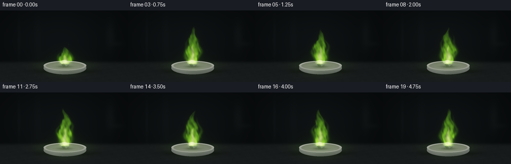
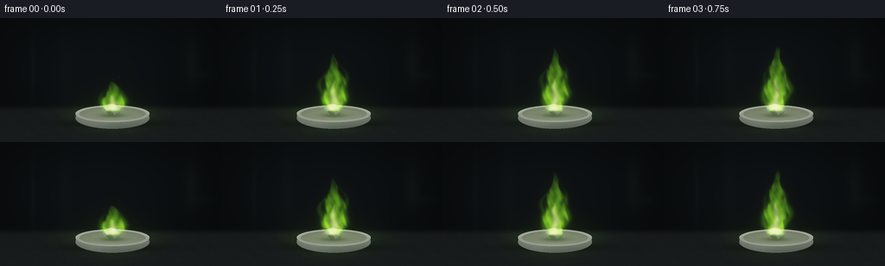

CODING AGENTS AS PIXEL WORLD MODELS
traex/GPT-6.1-Sol · material_0007
点击播放 · 原生 RGB 像素
逐轮保存的候选
回放视频、检查图与代码变化。
每份候选均可单独播放。实际图片检查记录在下方工具轨迹中。
候选 01播放与检查图
点击播放 · 原生 RGB 像素


展开代码变化
--- 上一保存版本
+++ 本次保存版本
@@ -0,0 +1,154 @@
+from pathlib import Path
+import json
+import numpy as np
+from PIL import Image, ImageDraw, ImageFilter
+import artifact_io
+
+ROOT = Path(__file__).resolve().parent
+SPEC = json.loads((ROOT/'task_spec.json').read_text())
+W,H = SPEC['width'],SPEC['height']
+S = 3
+WW,HH = W*S,H*S
+Y,X = np.mgrid[0:HH,0:WW].astype(np.float32)/S
+rng = np.random.default_rng(272)
+
+# All scene geometry and textures are generated here; no external assets.
+def noise(x,y,seed=0):
+ # Smooth, deterministic, multiscale turbulent texture.
+ return (np.sin(x*.73+y*.41+seed)*np.sin(y*.91-x*.23+seed*1.7)
+ + .48*np.sin(x*1.63-y*1.19+seed*2.4)*np.sin(y*1.47+x*.89)
+ + .22*np.sin(x*3.21+y*2.77+seed*.51)) / 1.7
+
+def ellipse(cx,cy,rx,ry):
+ return ((X-cx)/rx)**2+((Y-cy)/ry)**2
+
+def polygon_mask(points):
+ im=Image.new('L',(WW,HH))
+ ImageDraw.Draw(im).polygon([(int(a*S),int(b*S)) for a,b in points],fill=255)
+ return np.asarray(im,dtype=np.float32)/255
+
+# A softly focused, unlit laboratory backdrop and a refractory work surface.
+wall=np.exp(-(((X-118)/130)**2+((Y-61)/82)**2))
+base=np.zeros((HH,WW,3),np.float32)
+base[:]=[5.0,7.1,7.6]
+base+=wall[...,None]*np.array([8,9,10])
+for cx,cy,rx,ry,col in [(38,58,3,41,[2,3,3]),(221,50,9,29,[4,5,5]),(235,67,13,5,[2,3,3]),(76,56,7,43,[1,2,2])]:
+ base+=np.exp(-ellipse(cx,cy,rx,ry))[...,None]*col
+plane=1/(1+np.exp(-(Y-104)/1.5))
+stone=noise(X*.27,Y*.65,3)*1.2+noise(X*1.1,Y*1.2,7)*.6
+base=base*(1-plane[...,None])+ (np.array([21,24,25])+stone[...,None]+(Y-105)[...,None]*.035)*plane[...,None]
+# Shadow under the porcelain dish.
+shadow=np.exp(-ellipse(131,122,51,5.0))*.74
+base*=1-shadow[...,None]
+
+# Shallow glazed ceramic combustion dish, with shaded curved sides and thin rim.
+body=ellipse(130,115.7,43,12.8)<1
+bodyshade=np.clip((Y-105)/22,0,1)
+ceramic=np.zeros_like(base)
+ceramic[:]=[153,157,151]
+ceramic-=bodyshade[...,None]*np.array([64,65,60])
+ceramic+=np.exp(-((X-109)/17)**2)[...,None]*[17,17,16]
+ceramic+=noise(X*.8,Y*.9,1)[...,None]*1.2
+base=np.where(body[...,None],ceramic,base)
+outer=ellipse(130,111,43,9.9)
+inner=ellipse(130,111,38.5,7.9)
+rim=(outer<1)&(inner>1)
+base=np.where((outer<1)[...,None],np.array([184,185,170]),base)
+wellshade=35*(Y-103)/16
+well=np.array([116,119,104])+wellshade[...,None]+noise(X*.6,Y*.8,2)[...,None]*1.6
+base=np.where((inner<1)[...,None],well,base)
+base=np.where(rim[...,None],np.array([188,190,177])+np.exp(-((Y-107)/3)**2)[...,None]*26,base)
+# Hairline worn rim and a quiet glazed highlight.
+high=(outer>.90)&(outer<1)&(Y<111)
+base=np.where(high[...,None],np.array([226,227,213]),base)
+
+# A rough, irregular silver-grey barium fragment and a small oxidized crust.
+rockpts=[(119,108.5),(119.7,103.4),(123.4,100.8),(128.6,99.5),(133.5,100.7),(137.1,103.2),(140,107.5),(138.1,111.3),(132,113.2),(125.9,112.7)]
+rock=polygon_mask(rockpts)
+rockshadow=np.exp(-ellipse(130,113,15,2.7))*.53
+base*=1-rockshadow[...,None]*(inner<1)[...,None]
+rocklight=1.0-((X-124)*.026+(Y-102)*.11)
+rocktex=noise(X*.75,Y*1.1,12)*20+noise(X*2.5,Y*2.8,9)*8
+rockcolor=np.clip(np.array([96,99,95])+rocklight[...,None]*38+rocktex[...,None],30,190)
+base=base*(1-rock[...,None])+rockcolor*rock[...,None]
+facets=[([(120,103.5),(127,100),(128,106),(123,108)], [150,153,147]), ([(127,100),(133,101),(137,104),(128,106)],[119,124,117]), ([(123,108),(128,106),(132,112),(126,113)],[63,68,62]), ([(128,106),(137,104),(139,108),(132,112)],[104,111,101])]
+for pts,col in facets:
+ m=polygon_mask(pts)*rock
+ c=np.array(col)+rocktex[...,None]*.55
+ base=base*(1-m[...,None])+c*m[...,None]
+# Scatter a few inconspicuous ash flecks close to the fragment.
+for _ in range(28):
+ cx=rng.normal(130,12);cy=rng.normal(113,2)
+ a=np.exp(-ellipse(cx,cy,rng.uniform(.14,.55),rng.uniform(.13,.35)))*.4*(inner<1)*(1-rock)
+ base=base*(1-a[...,None])+np.array([62,69,52])*a[...,None]
+
+z=106-Y
+
+def render(i):
+ t=i/SPEC['fps']
+ # Ignition quickly develops into a stable, apple-green metallic flame.
+ growth=.46+.54*(1-np.exp(-t*5))
+ ht=(72+4*np.sin(3.2*t)+2*np.sin(7.9*t))*growth
+ q=np.clip(z/ht,0,1.4)
+ turbulent=noise((X-130)*.26,(z+t*21)*.17,8)
+ center=130 + 3.2*np.sin(z*.080-t*3.1)*q + 3*np.sin(z*.155-t*4.6)*q*q
+ width=(8.5+11*np.sin(np.pi*np.clip(q,0,1))**.85)*(1-np.clip(q,0,1))**.65
+ width*=1+.13*np.sin(z*.26-t*6.1)
+ width+=turbulent*2.3*np.clip(q*4,0,1)
+ width=np.maximum(width,.35)
+ dx=X-center
+ edge=(np.abs(dx)/width)
+ # Irregular gas-flow contours, including narrow connected tip filaments.
+ edge+=.19*turbulent+.07*np.sin(X*.9+z*.33-t*11)
+ silhouette=1/(1+np.exp(np.clip((edge-.82)*15,-40,40)))
+ cap=1/(1+np.exp(np.clip((q-1)*85,-40,40)))
+ foot=1/(1+np.exp(np.clip(-(z+1.2)*2,-40,40)))
+ density=silhouette*cap*foot
+ # Flowing internal streaks make a translucent flame, not a solid shape.
+ tex=noise((X-130)*.34,(z-t*27)*.24,4)
+ ribbons=.65+.28*tex+.20*np.sin((dx+.09*z)*.57+np.sin(z*.16-t*5.4)*2-t*3)
+ brightness=np.clip((1-q)*1.05+.08,.05,1.2)
+ emission=density*ribbons*brightness
+ # Side flame tongues advect with the same heat source.
+ for j,(side,leng) in enumerate([(-1,.71),(1,.82)]):
+ h=ht*leng*(1+.09*np.sin(t*4+j))
+ v=np.clip(z/h,0,1.2)
+ c=130+side*(5+10*np.sin(np.pi*np.clip(v,0,1))) + 2.3*np.sin(z*.19-t*5+j)
+ w=4.8*(1-np.clip(v,0,1))**.65+.25
+ a=np.exp(-((X-c)/w)**2*1.4)*(1/(1+np.exp(np.clip((v-1)*65,-40,40))))*foot
+ emission+=a*.30*np.clip(1-v,0,1)*(.8+.2*tex)
+ density=np.maximum(density,a*.60)
+ # Very hot near-white core transitions to unmistakable green outer fire.
+ corew=(6.5+1.3*np.sin(z*.23-t*7))*np.clip(1-z/(ht*.52),0,1)**.65+.1
+ core=np.exp(-((X-130-1.2*np.sin(z*.25-t*4))/corew)**2*1.8)*np.clip(1-z/(ht*.52),0,1)**.5*foot
+ core*=.8+.13*np.sin(z*.47-t*9)+.1*tex
+ # Photographic emission and warm green light cast on the dish and slate.
+ cast=np.exp(-ellipse(130,107,43,20))*(.80+.1*np.sin(5*t))
+ frame=base.copy()
+ reflect=cast[...,None]*np.array([28,54,9])
+ frame+=reflect*(.3+.7*plane[...,None])
+ # Incandescent metal edge and oxide where the flame meets the fuel.
+ incand=np.exp(-ellipse(130,103.0,8.9,3.4))*rock
+ frame+=incand[...,None]*np.array([140,144,46])*(.9+.08*np.sin(t*10))
+ flame=emission[...,None]*np.array([125,263,16])+core[...,None]*np.array([221,186,141])
+ # Fine green flickers leaving the body, not an exaggerated spark shower.
+ for k in range(3):
+ age=(t*.61+k*.37)%1
+ yy=104-age*48
+ xx=130+np.sin(age*6+k*2)*age*12
+ sp=np.exp(-ellipse(xx,yy,.22,.8))*np.sin(np.pi*age)**2*.40
+ flame+=sp[...,None]*[148,208,43]
+ # Spatial bloom renders lens diffusion around the luminous plume.
+ glow_image=Image.fromarray(np.uint8(np.clip(flame*.65,0,255)))
+ bloom=np.asarray(glow_image.filter(ImageFilter.GaussianBlur(2.2*S)),np.float32)*.42
+ halo=np.asarray(glow_image.filter(ImageFilter.GaussianBlur(7*S)),np.float32)*.22
+ # Use an exponential shoulder for film-like highlights without flat clipping.
+ frame+=flame+bloom+halo
+ frame=255*(1-np.exp(-frame/222))
+ frame=np.clip(frame,0,255)
+ im=Image.fromarray(frame.astype(np.uint8)).resize((W,H),Image.Resampling.LANCZOS)
+ return np.asarray(im)
+
+frames=np.stack([render(i) for i in range(SPEC['frames'])])
+artifact_io.save(frames,ROOT)
+print(f'Saved {len(frames)} RGB frames, {W}x{H}, {SPEC["fps"]} fps to {ROOT}')
可观测工具轨迹
实际执行的命令与返回图片。
命令 1exit 0
/bin/bash -lc 'ls -la && cat prompt.txt && cat GENERATION_RULES.md && cat task_spec.json'
命令 2exit 0
/bin/bash -lc "cat artifact_io.py && python - <<'PY'
import PIL,numpy
print('PIL and numpy available')
PY"命令 3exit 0
/bin/bash -lc "cat > generate.py <<'PY'
from pathlib import Path
import json
import numpy as np
from PIL import Image, ImageDraw, ImageFilter
import artifact_io
ROOT = Path(__file__).resolve().parent
SPEC = json.loads((ROOT/'task_spec.json').read_text())
W,H = SPEC['width'],SPEC['height']
S = 3
WW,HH = W*S,H*S
Y,X = np.mgrid[0:HH,0:WW].astype(np.float32)/S
rng = np.random.default_rng(272)
# All scene geometry and textures are generated here; no external assets.
def noise(x,y,seed=0):
# Smooth, deterministic, multiscale turbulent texture.
return (np.sin(x*.73+y*.41+seed)*np.sin(y*.91-x*.23+seed*1.7)
+ .48*np.sin(x*1.63-y*1.19+seed*2.4)*np.sin(y*1.47+x*.89)
+ .22*np.sin(x*3.21+y*2.77+seed*.51)) / 1.7
def ellipse(cx,cy,rx,ry):
return ((X-cx)/rx)**2+((Y-cy)/ry)**2
def polygon_mask(points):
im=Image.new('L',(WW,HH))
ImageDraw.Draw(im).polygon([(int(a*S),int(b*S)) for a,b in points],fill=255)
return np.asarray(im,dtype=np.float32)/255
# A softly focused, unlit laboratory backdrop and a refractory work surface.
wall=np.exp(-(((X-118)/130)**2+((Y-61)/82)**2))
base=np.zeros((HH,WW,3),np.float32)
base[:]=[5.0,7.1,7.6]
base+=wall[...,None]*np.array([8,9,10])
for cx,cy,rx,ry,col in [(38,58,3,41,[2,3,3]),(221,50,9,29,[4,5,5]),(235,67,13,5,[2,3,3]),(76,56,7,43,[1,2,2])]:
base+=np.exp(-ellipse(cx,cy,rx,ry))[...,None]*col
plane=1/(1+np.exp(-(Y-104)/1.5))
stone=noise(X*.27,Y*.65,3)*1.2+noise(X*1.1,Y*1.2,7)*.6
base=base*(1-plane[...,None])+ (np.array([21,24,25])+stone[...,None]+(Y-105)[...,None]*.035)*plane[...,None]
# Shadow under the porcelain dish.
shadow=np.exp(-ellipse(131,122,51,5.0))*.74
base*=1-shadow[...,None]
# Shallow glazed ceramic combustion dish, with shaded curved sides and thin rim.
body=ellipse(130,115.7,43,12.8)<1
bodyshade=np.clip((Y-105)/22,0,1)
ceramic=np.zeros_like(base)
ceramic[:]=[153,157,151]
ceramic-=bodyshade[...,None]*np.array([64,65,60])
ceramic+=np.exp(-((X-109)/17)**2)[...,None]*[17,17,16]
ceramic+=noise(X*.8,Y*.9,1)[...,None]*1.2
base=np.where(body[...,None],ceramic,base)
outer=ellipse(130,111,43,9.9)
inner=ellipse(130,111,38.5,7.9)
rim=(outer<1)&(inner>1)
base=np.where((outer<1)[...,None],np.array([184,185,170]),base)
wellshade=35*(Y-103)/16
well=np.array([116,119,104])+wellshade[...,None]+noise(X*.6,Y*.8,2)[...,None]*1.6
base=np.where((inner<1)[...,None],well,base)
base=np.where(rim[...,None],np.array([188,190,177])+np.exp(-((Y-107)/3)**2)[...,None]*26,base)
# Hairline worn rim and a quiet glazed highlight.
high=(outer>.90)&(outer<1)&(Y<111)
base=np.where(high[...,None],np.array([226,227,213]),base)
# A rough, irregular silver-grey barium fragment and a small oxidized crust.
rockpts=[(119,108.5),(119.7,103.4),(123.4,100.8),(128.6,99.5),(133.5,100.7),(137.1,103.2),(140,107.5),(138.1,111.3),(132,113.2),(125.9,112.7)]
rock=polygon_mask(rockpts)
rockshadow=np.exp(-ellipse(130,113,15,2.7))*.53
base*=1-rockshadow[...,None]*(inner<1)[...,None]
rocklight=1.0-((X-124)*.026+(Y-102)*.11)
rocktex=noise(X*.75,Y*1.1,12)*20+noise(X*2.5,Y*2.8,9)*8
rockcolor=np.clip(np.array([96,99,95])+rocklight[...,None]*38+rocktex[...,None],30,190)
base=base*(1-rock[...,None])+rockcolor*rock[...,None]
facets=[([(120,103.5),(127,100),(128,106),(123,108)], [150,153,147]), ([(127,100),(133,101),(137,104),(128,106)],[119,124,117]), ([(123,108),(128,106),(132,112),(126,113)],[63,68,62]), ([(128,106),(137,104),(139,108),(132,112)],[104,111,101])]
for pts,col in facets:
m=polygon_mask(pts)*rock
c=np.array(col)+rocktex[...,None]*.55
base=base*(1-m[...,None])+c*m[...,None]
# Scatter a few inconspicuous ash flecks close to the fragment.
for _ in range(28):
cx=rng.normal(130,12);cy=rng.normal(113,2)
a=np.exp(-ellipse(cx,cy,rng.uniform(.14,.55),rng.uniform(.13,.35)))*.4*(inner<1)*(1-rock)
base=base*(1-a[...,None])+np.array([62,69,52])*a[...,None]
z=106-Y
def render(i):
t=i/SPEC['fps']
# Ignition quickly develops into a stable, apple-green metallic flame.
growth=.46+.54*(1-np.exp(-t*5))
ht=(72+4*np.sin(3.2*t)+2*np.sin(7.9*t))*growth
q=np.clip(z/ht,0,1.4)
turbulent=noise((X-130)*.26,(z+t*21)*.17,8)
center=130 + 3.2*np.sin(z*.080-t*3.1)*q + 3*np.sin(z*.155-t*4.6)*q*q
width=(8.5+11*np.sin(np.pi*np.clip(q,0,1))**.85)*(1-np.clip(q,0,1))**.65
width*=1+.13*np.sin(z*.26-t*6.1)
width+=turbulent*2.3*np.clip(q*4,0,1)
width=np.maximum(width,.35)
dx=X-center
edge=(np.abs(dx)/width)
# Irregular gas-flow contours, including narrow connected tip filaments.
edge+=.19*turbulent+.07*np.sin(X*.9+z*.33-t*11)
silhouette=1/(1+np.exp(np.clip((edge-.82)*15,-40,40)))
cap=1/(1+np.exp(np.clip((q-1)*85,-40,40)))
foot=1/(1+np.exp(np.clip(-(z+1.2)*2,-40,40)))
density=silhouette*cap*foot
# Flowing internal streaks make a translucent flame, not a solid shape.
tex=noise((X-130)*.34,(z-t*27)*.24,4)
ribbons=.65+.28*tex+.20*np.sin((dx+.09*z)*.57+np.sin(z*.16-t*5.4)*2-t*3)
brightness=np.clip((1-q)*1.05+.08,.05,1.2)
emission=density*ribbons*brightness
# Side flame tongues advect with the same heat source.
for j,(side,leng) in enumerate([(-1,.71),(1,.82)]):
h=ht*leng*(1+.09*np.sin(t*4+j))
v=np.clip(z/h,0,1.2)
c=130+side*(5+10*np.sin(np.pi*np.clip(v,0,1))) + 2.3*np.sin(z*.19-t*5+j)
w=4.8*(1-np.clip(v,0,1))**.65+.25
a=np.exp(-((X-c)/w)**2*1.4)*(1/(1+np.exp(np.clip((v-1)*65,-40,40))))*foot
emission+=a*.30*np.clip(1-v,0,1)*(.8+.2*tex)
density=np.maximum(density,a*.60)
# Very hot near-white core transitions to unmistakable green outer fire.
corew=(6.5+1.3*np.sin(z*.23-t*7))*np.clip(1-z/(ht*.52),0,1)**.65+.1
core=np.exp(-((X-130-1.2*np.sin(z*.25-t*4))/corew)**2*1.8)*np.clip(1-z/(ht*.52),0,1)**.5*foot
core*=.8+.13*np.sin(z*.47-t*9)+.1*tex
# Photographic emission and warm green light cast on the dish and slate.
cast=np.exp(-ellipse(130,107,43,20))*(.80+.1*np.sin(5*t))
frame=base.copy()
reflect=cast[...,None]*np.array([28,54,9])
frame+=reflect*(.3+.7*plane[...,None])
# Incandescent metal edge and oxide where the flame meets the fuel.
incand=np.exp(-ellipse(130,103.0,8.9,3.4))*rock
frame+=incand[...,None]*np.array([140,144,46])*(.9+.08*np.sin(t*10))
flame=emission[...,None]*np.array([125,263,16])+core[...,None]*np.array([221,186,141])
# Fine green flickers leaving the body, not an exaggerated spark shower.
for k in range(3):
age=(t*.61+k*.37)%1
yy=104-age*48
xx=130+np.sin(age*6+k*2)*age*12
sp=np.exp(-ellipse(xx,yy,.22,.8))*np.sin(np.pi*age)**2*.40
flame+=sp[...,None]*[148,208,43]
# Spatial bloom renders lens diffusion around the luminous plume.
glow_image=Image.fromarray(np.uint8(np.clip(flame*.65,0,255)))
bloom=np.asarray(glow_image.filter(ImageFilter.GaussianBlur(2.2*S)),np.float32)*.42
halo=np.asarray(glow_image.filter(ImageFilter.GaussianBlur(7*S)),np.float32)*.22
# Use an exponential shoulder for film-like highlights without flat clipping.
frame+=flame+bloom+halo
frame=255*(1-np.exp(-frame/222))
frame=np.clip(frame,0,255)
im=Image.fromarray(frame.astype(np.uint8)).resize((W,H),Image.Resampling.LANCZOS)
return np.asarray(im)
frames=np.stack([render(i) for i in range(SPEC['frames'])])
artifact_io.save(frames,ROOT)
print(f'Saved {len(frames)} RGB frames, {W}x{H}, {SPEC[\"fps\"]} fps to {ROOT}')
PY
python generate.py"视觉工具实际返回图片 1

保存候选 1 份；完成命令 3 次；可验证图片返回 1 张。原始 API 响应与完整日志保留在本地。